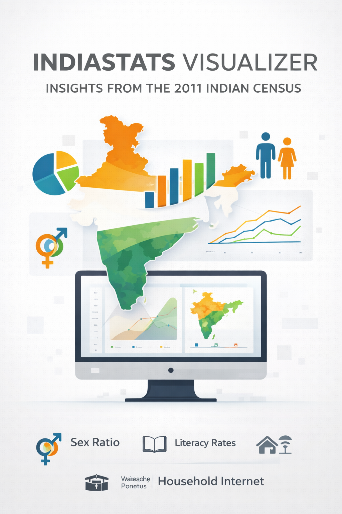
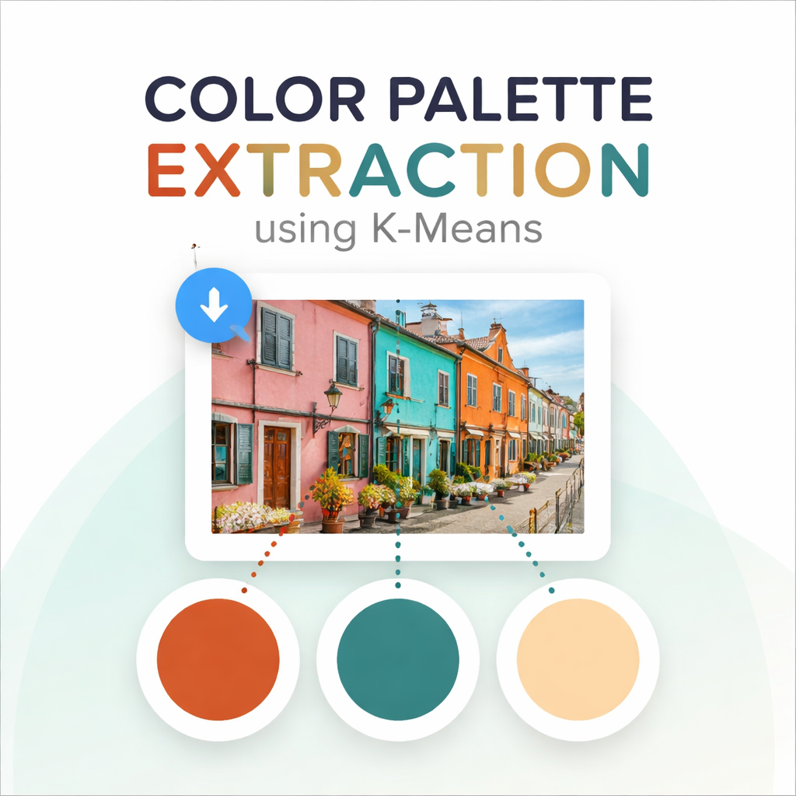

This is my collection of fun and experimental projects! These are projects I built to explore new ideas, practice my skills, or simply because they seemed interesting. While not all of them are large-scale or professional, each one reflects my curiosity, creativity, and eagerness to learn new techniques in data science and programming.

IndiaStats Visualizer
Interactive Demographic Insights from the 2011 Indian Census
An interactive Streamlit dashboard built on the 2011 Indian Census dataset that visualizes key demographic indicators across India, including sex ratio, literacy rates, household internet access, and electrification. The project leverages NumPy and Pandas for data processing and Plotly for dynamic visualizations, enabling users to explore population trends and gain meaningful insights through an intuitive interface.

Color palette extraction using K-means
This project uses the K-Means clustering algorithm to identify the top three dominant colors in an image. Users can upload any image through an interactive Streamlit web app, where pixel data is clustered in color space to extract the most representative colors. The project demonstrates practical applications of unsupervised learning in image processing and data visualization.
Indian Startup Analysis
Data-Driven Insights into India’s Startup Ecosystem
Indian Startup Analysis is an interactive dashboard that provides insights into India’s dynamic startup ecosystem. Users can explore funding trends over the years, track investment activity across industry verticals, discover leading investors, and analyze individual startups. The tool makes it easy to understand how India’s startup landscape has evolved and where opportunities lie.
Technical Description:
The project is built using Streamlit for the interactive interface, NumPy and Pandas for data processing, and Matplotlib and Plotly for dynamic visualizations. It leverages data-driven analytics to uncover patterns in funding, investor behavior, and sector growth, providing both visual and quantitative insights for data enthusiasts and analysts.